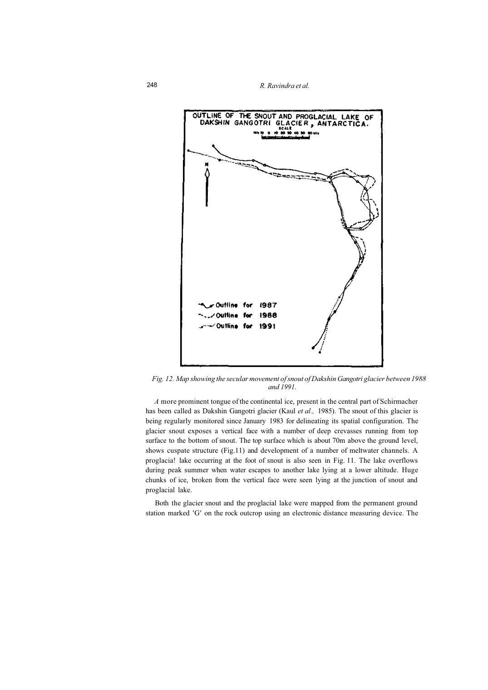
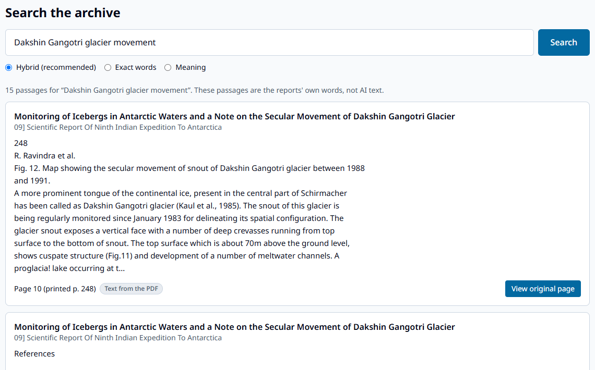
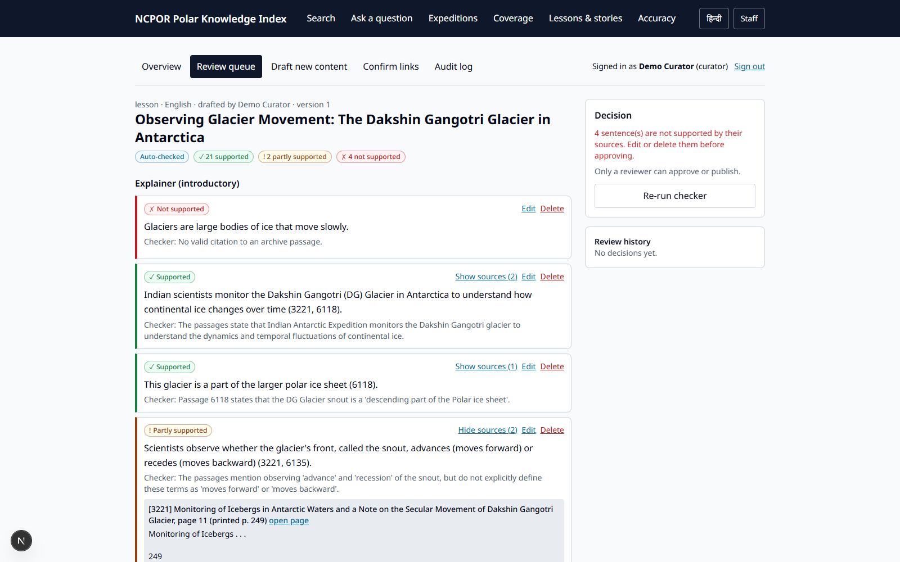
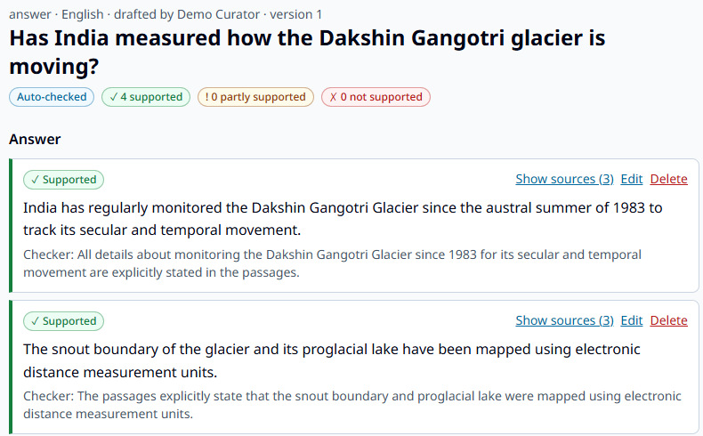
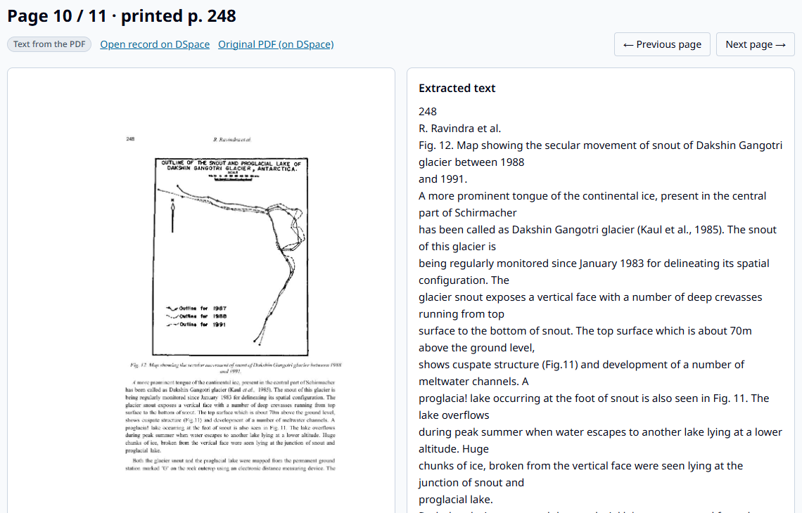
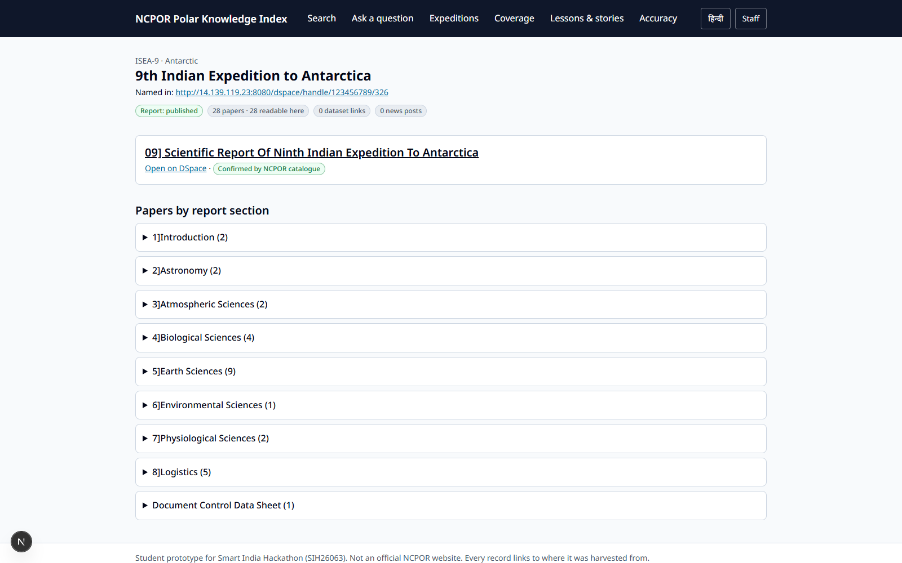
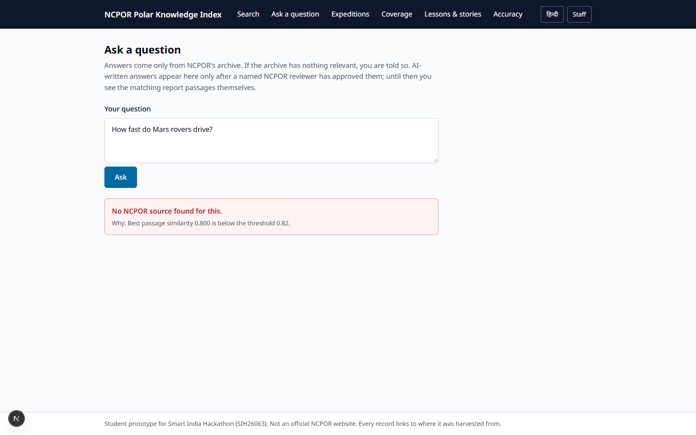
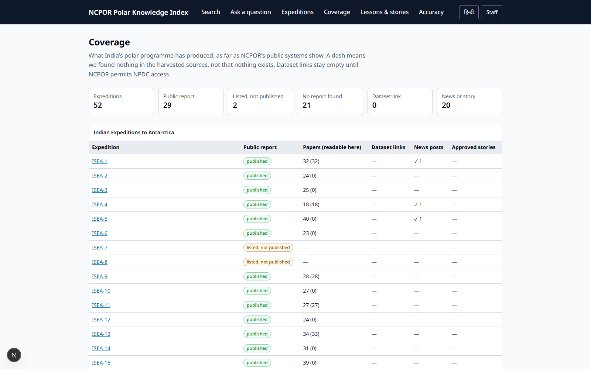

SMART INDIA HACKATHON 2026 · Problem Statement 26063 · Team Anarch
Polar Knowledge Index
NCPOR ke 40 saal ke polar expedition archive ko searchable, linked aur trustworthy banane wala system — aasaan Hinglish mein samjhaaya gaya
“Every expedition. Every page. Every claim cited.”
📚 Archive🔎 Search🤖 AI with proof✅ Human approval🇮🇳 English + हिन्दी
Ye document un logon ke liye hai jinhe technical background nahi chahiye.
Basics se shuru karke moderate level tak — har cheez diagram, flowchart, screenshot aur real data ke saath.
Humne ek aisa system banaya hai jo NCPOR ke already publish kiye hue purane expedition reports ko khud
ikattha karta hai, unhe padhta hai, har report ko uske expedition, station, topic aur saal se jodta hai — aur phir
students, teachers aur outreach team ke sawaalon ka jawaab sirf unhi reports se, page number ke saboot ke saath deta hai.
Socho ek bahut bada library hai jisme 40 saal ki kitaabein hain, par na koi index hai, na koi librarian.
Humne ek smart librarian banaya hai jo har kitaab padh chuka hai, har page yaad rakhta hai, aur jab aap kuch poochte ho to
bolta hai: “ye raha jawaab — Report 9, page 248 pe likha hai, khud dekh lo.” Aur agar library mein jawaab nahi hai, to
saaf bol deta hai “nahi pata” — kuch bana ke nahi bolta.
Real numbers — jo system abhi chal raha hai
32
expedition reports (DSpace se)
765
scientific papers (har ek ka PDF)
837
NCPOR news posts (2012 se aaj tak)
3,266
scanned pages padhe gaye
6,377
searchable passages (text ke tukde)
52
expeditions coverage view mein
0
naye records jo NCPOR staff ko type karne pade
31
automated tests pass ho rahe hain
2
Basics
NCPOR kaun hai aur kya karta hai?
NCPOR = National Centre for Polar and Ocean Research, Goa. Ye Ministry of Earth Sciences (MoES) ke under
ek research institute hai. Ye India ke Antarctica, Arctic, Southern Ocean aur Himalaya wale scientific expeditions chalata hai.
Har expedition ke baad kya banta hai?
Har saal scientists wahan jaate hain — glacier naapte hain, mausam record karte hain, chattano (rocks), samudra, jeev-jantu,
aur insaan ke shareer par thand ka asar study karte hain. Wapas aakar ek “Scientific Report” chhapti hai jisme 20–40
research papers hote hain. Purani reports (1980s–2000s) ki scanned PDFs NCPOR ki ek website DSpace par padi hain.
Expedition Ek research yatra. Jaise “9th Indian Expedition to Antarctica”. Hum ise code dete hain: ISEA-9.
Station Antarctica/Arctic mein India ka research ghar. Jaise Maitri, Bharati, Himadri.
Report → Paper → Page Ek report mein kayi papers; har paper ke kayi pages. Hum har page tak track karte hain.
NCPOR ke paas khazana hai — 40 saal ka Indian polar science. Problem ye nahi ki data nahi hai.
Problem ye hai ki ye khazana bandh almari mein hai: scanned PDFs jinhe na search kar sakte ho, na aapas mein jod sakte ho.
3
Problem
Problem — data 6 jagah bikhra hua hai
NCPOR ka material kam se kam 6 alag-alag systems mein hai, aur inke beech koi connection nahi hai:
Ek student ki pareshani — real example
Sawaal: “India ne Bharati station par kya research kiya?”
Aaj ka raasta: main website (station page) → DSpace (reports, scanned, search nahi hota) → NPDC (datasets) → Google Scholar
(papers) → YouTube (videos)… 5 jagah, aur kahin bhi koi link nahi. Zyada tar log thak ke internet ki unverified
jaankari use kar lete hain.
Kis-kis ko dikkat hoti hai?
Kaun
Dikkat
Nateeja
NCPOR outreach team
Har news post zero se likhni padti hai, background facts haath se dhoondhne padte hain
Outreach irregular
Teachers
India ke apne polar research par koi teaching material nahi
Bachche videshi examples padhte hain
Students
Simple sawaal ka bharosemand jawaab nahi milta
Galat internet content
Researchers
Purane expedition ka kaam scanned PDFs mein band hai
Kaam dobara hota hai
Journalists
Jaldi verified fact chahiye
News mein galtiyan
Asli problem “website nahi hai” nahi hai — asli problem hai “links nahi hain”. Humara system wahi missing links banata hai.
4
Solution
Hamara idea — ek “smart librarian”
Hum NCPOR se koi naya data type karwane ko nahi bolte. Jo already publish ho chuka hai, wahi utha ke usko
padhte, jodte, dhoondhne layak banaate hain — aur AI se likhwaaya gaya har shabd page ke saboot ke saath aata hai.
Hamare 4 vaade (promises)
1. Zero naya data entry System khud DSpace aur NCPOR news feed se records utha leta hai. Staff ko kuch type nahi karna.
2. Sab kuch juda hua Har report, paper aur news → kis expedition, kis station, kis topic, kis saal ka hai.
3. Har line ka saboot AI ka har sentence batata hai ki wo kis report ke kis page se aaya. Saboot nahi → jawaab nahi.
4. Insaan ki final approval AI sirf draft banata hai. Ek naam wala NCPOR reviewer approve kare tabhi public hota hai.
Doosri SIH teams se hum alag kyon hain?
Is problem statement par kai teams ne “AI portal” banaye hain. Hum 4 cheezon mein alag hain:
Cheez
Aam SIH prototype
Polar Knowledge Index
NCPOR ka asli archive use karta hai
✗ seed/dummy data
✓ 32 real reports
Staff ko naya data type karna padta hai
✗ upload forms
✓ automatic harvest
Har sentence ka fact-check, galat line approval rokti hai
✗
✓
Accuracy naapi gayi (measured)
✗ sirf claim
✓ verified test set
Coverage view — kya missing hai
✗
✓
Baaki teams kehti hain “humara AI accurate hai”. Hum kehte hain “humne naapa hai, aur ye raha number” —
aur har jawaab ke saath original scanned page dikhate hain. Judges ke liye ye sabse bharosemand cheez hai.
5
Overview
Poora system ek nazar mein
Ise ek factory ki assembly line ki tarah socho. Kachcha maal (NCPOR ke reports) ek taraf se aata hai, aur doosri taraf se
search, jawaab, lessons aur announcements nikalte hain — beech mein 7 steps.
Steps ①–④ “archive” hissa hain (bina AI ke bhi chalte hain). Steps ⑤–⑦ “AI + insaan” hissa hain.
6
Step 1
Reports ikattha karna (Harvesting)
Harvesting ka matlab hai doosri website se records apne aap copy karna — bilkul waise jaise khet se fasal kaatte hain.
Humara program DSpace aur NCPOR news feed se ye kaam karta hai.
DSpace ka structure (ek tree jaisa)
Hum ek “achhe mehmaan” ki tarah aate hain
robots.txt padhte hain — har website ek file rakhti hai jo batati hai ki bots kya le sakte hain. Hum uska paalan karte hain.
1 second mein sirf 1 request — NCPOR ka server overload na ho.
Har file ek hi baar download — copy apne computer par cache mein, dobara nahi maangte.
Original wahin rehta hai — hum PDF dobara publish nahi karte, sirf link + padha hua text rakhte hain.
NPDC ko nahi chhuaa — wahan ke datasets ke liye NCPOR ki permission chahiye.
OAI-PMH kya hai? Libraries ka ek standard “catalogue copy” protocol. DSpace mein ye pehle se ON tha — isliye humne bina scraping ke saaf-suthre records le liye.
Harvest ka result
32
report communities
765
papers (metadata)
264
PDFs download (10 reports)
837
news posts
Dobara chalao to system kuch bhi dobara download nahi karta aur ek bhi duplicate record nahi banata — humne test kiya: 0 network requests, 0 naye duplicates.
7
Step 2
Purane scans padhna (Text layer + OCR)
Scanned PDF asal mein photo hoti hai — computer ke liye usme “shabd” nahi, sirf pixels hote hain. Use padhne ke 2 tareeke:

Asli scan: 9th Expedition report, printed page 248 — Dakshin Gangotri glacier snout ka map
Har page ke saath kya save hota hai?
Text — searchable
Kahan se aaya — text layer ya OCR
OCR confidence — kitna bharosa
Printed page number — jaise “248” (PDF ka page 10 ≠ report ka page 248!)
Page ki image — taaki “View original page” dikha sakein
Har jawaab ke saath hum ye scan dikhate hain. Agar OCR ne galti ki ho, to padhne wala khud asli page dekh ke check kar sakta hai.
Chunks: har page ke text ko chhote tukdon (≈1,500 characters) mein kaata jaata hai. Ek tukda kabhi do pages mein nahi phailta — taaki har citation ek exact page bataye. Total: 6,377 chunks.
Real data — 10 reports, 3,266 pages
Text layer seOCR se
R1
242 pg
R4
191 pg
R9
316 pg
R11
346 pg
R13
399 pg
R16
453 pg
R19
290 pg
R22
262 pg
R26
463 pg
R30
304 pg
Finding: 10 mein se 9 reports ke 68–92% pages mein pehle se text layer tha. Report 30 poora OCR karna pada — average confidence 90%. Saare 10 reports ~2 minute mein padh liye gaye (laptop par).
8
Step 3
Sab cheezon ko jodna (Linking)
Ye humara sabse important step hai — yahi “missing links” banata hai. Har item (report, paper, news) ko 4 cheezon se joda jaata hai:
Link kaise banta hai? Pehle rules, phir AI
Tareeka
Example
Status
Report ka title padho
“Scientific Report Of Ninth Indian Expedition” → ISEA-9 (“Twenty First” → 21 bhi samajhta hai)
Confirmed
NCPOR ka section
Paper “5] Earth Sciences” section mein hai → topic Geology
Confirmed
Printed header
Page 1 par “Scientific Report, 1994” → year 1994
Confirmed
Keywords
Text mein “Maitri” 2+ baar → station Maitri
Unconfirmed
AI (fallback)
Jahan rules fail hon, AI fixed list mein se topic chunta hai + saboot quote
Unconfirmed
Rule simple hai: jo NCPOR ne khud likha (title, section, printed page) → confirmed. Jo humne ya AI ne andaaza lagaya → unconfirmed, jab tak ek curator (NCPOR staff) “Confirm” ya “Reject” na dabaye. Har link ke saath wajah (evidence) bhi save hoti hai.
32/32
reports ka expedition link
765/765
papers ka expedition link
3,616
links rules se
65
links AI se (unconfirmed)
Ek galti jo humne pakdi: pehle version ne news ki line “The first team of the 45th ISEA” ko “Expedition 1” samajh liya,
aur “42nd Chinese Antarctic Expedition” ko India ka ISEA-2! Humne rule sakht kiya — number ke turant baad “(Indian) (Scientific) Expedition”
hona chahiye — aur in galtiyon ke tests likhe taaki dobara na ho.
Bonus: news se humein expeditions 33–46 ka pata chala jinki report DSpace mein hai hi nahi — ye coverage view mein dikhta hai (chapter 14).
9
Step 4
Search — shabd aur matlab, dono
Purani reports alag shabd use karti hain. Student likhta hai “glacier kitna pighla”, report mein likha hai “ablation” ya
“secular movement”. Normal search ye match nahi kar paata. Isliye hum 2 search ek saath chalaate hain:
🔤 Keyword search (shabd) Exact shabd dhoondhta hai — jaise “Maitri”, “ISEA-9”, instrument codes.
Tool: PostgreSQL full-text search ✓ Exact naam kabhi miss nahi · ✗ Synonyms nahi samajhta
🧠 Meaning search (matlab) Har text ko 768 numbers ki list (embedding) mein badalta hai. Milte-julte matlab = milte-julte numbers.
Tool: multilingual-e5 model, laptop par chalta hai ✓ “moving” ≈ “movement” · ✗ Exact codes kabhi miss
Embedding ko aise samjho: har paragraph ko ek naksha (map) par point bana diya. “Glacier pighalna” aur “glacier ablation” map par paas-paas aate hain, “cricket match” door. Sawaal ka point banao, aur sabse paas wale paragraphs utha lo.
Dono ko milana — “Hybrid” (RRF)
Dono searches apni-apni ranking deti hain. Reciprocal Rank Fusion ek simple formula hai: jo paragraph kisi bhi list mein upar hai, wo final list mein bhi upar aata hai. Koi tuning nahi chahiye.
Jawaab kab MANA karna hai? (Refusal)
Ye numbers real hain — 7 sawaalon par naapa. Archive wale sawaal 0.84–0.88, bahar ke sawaal 0.77–0.80. Isliye line 0.82 par khinchi.

Asli search: “Dakshin Gangotri glacier movement” → pehla result 9th Expedition ka glacier paper, printed page 248. “These passages are the reports' own words, not AI text.”
10
Step 5 · AI
AI se jawaab likhwaana (RAG)
RAG = Retrieval-Augmented Generation. Bhaari naam, simple idea: pehle dhoondo, phir sirf usi se likho.
AI ko apni yaaddasht se kuch bolne ki ijaazat nahi — sirf jo pages humne diye, unhi se.
AI ko diye gaye sakht niyam (rules)
Har fact wali line ke saath un passages ke IDs do jo use support karte hain (1–3 hi, saare nahi).
Jo passages mein nahi likha — numbers, dates, naam — mat jodo, chahe tumhe pata ho.
OCR wale text mein agar number saaf nahi dikhta, to number mat likho.
Kisi pehchaane jaa sakne wale insaan ki health / psychology par mat likho.
Agar passages jawaab nahi dete — “answerable: false” bolo, kuch mat banao.
Safety net: agar AI koi aisa passage ID likh de jo humne diya hi nahi tha, system wo citation khud hata deta hai. Aur agar AI kahe “ye line fact nahi hai, check mat karo” — system nahi maanta (ye humne real run mein pakda aur fix kiya).
3 tarah ke drafts
💬 Cited answer Student ke sawaal ka 2–5 line ka jawaab, har line page se judi.
📘 Lesson unit Class 6–12 ke liye: aasaan + advanced explainer, starter sawaal, activity, 5 quiz sawaal, teacher notes.
📣 Announcement Expedition par website post + X, Facebook, Instagram posts — sirf confirmed records se.
Hindi: approved English draft ka Hindi anuvaad banta hai, uski bhi alag se jaanch aur approval hoti hai.
11
Step 6 · AI
Fact-checker — har line ki jaanch
Draft banne ke baad ek doosra AI pass har sentence ko uske cited passage se milata hai — jaise teacher copy check karta hai — aur 3 mein se ek label lagata hai:
! Partly supported Main baat sahi, par koi detail passage mein nahi ya zyada badha-chadha ke.
✗ Not supported Passage mein nahi likha, ya ulta likha hai. Approval block!

Asli review screen: Class 11 glacier lesson — 21 supported, 2 partly, 4 not supported. Pehli line “Glaciers are large bodies of ice that move slowly” RED hai kyunki ye general knowledge hai, NCPOR ke passages mein nahi.
Real example — red flag: “Glaciers are large bodies of ice that move slowly.” → ✗ Not supported.
Baat sach hai, par diye gaye NCPOR pages mein nahi likhi. Humara system sirf saboot wali baat chhapta hai. Reviewer ise delete karega ya source jodega.
Real example — Hindi galti: “austral summer” (dakshini golaardh ki garmi) ka anuvaad AI ne “ऑस्ट्रेलियाई गर्मी” (Australia ki garmi) kar diya — aur checker ne pass kar diya!
Humne glossary jodi, ab sahi aata hai: “दक्षिणी गोलार्ध की गर्मी”. Seekh: AI checker bhi galti karta hai — isliye insaan ki approval zaroori hai.
Checker ek chhanni (filter) hai, judge nahi. Ye reviewer ka kaam aasaan karta hai — red lines pe dhyaan do — par final faisla insaan ka hai.
12
Step 7 · Insaan
Human approval + audit log
AI ka likha kuch bhi tab tak public nahi hota jab tak ek naam wala reviewer approve aur publish na kare. Har draft ek safar tay karta hai:
Kaun kya kar sakta hai? (Roles)
Role
Kya karta hai
Public
Sirf padhta hai — login nahi, likh nahi sakta
Curator
Machine links confirm/reject karta hai, drafts banwata hai
Reviewer
Approve, reject, publish, galti ho to correction
Admin
Sab kuch
Audit log — “CCTV camera”
Har action record hota hai: kisne, kab, kya kiya — login, draft bana, line edit hui, approve hua.
Append-only: database khud ek niyam lagata hai ki purani entry ko na badla jaa sakta, na mitaaya — chahe code mein bug ho. Test se verify kiya gaya.
Galti publish ho gayi? Chupke se badalte nahi — naya version banta hai “correction note” ke saath, purana history mein rehta hai.

Asli answer draft: “Has India measured how the Dakshin Gangotri glacier is moving?” — 4 mein se 4 lines ✓ supported, har ek ka source dekh sakte ho. Abhi “Auto-checked” — reviewer ka intezaar.
Sawaal pucho → matching passages + approved jawaab, ya “mana”
Page viewer
Scan aur uska text side-by-side
Expeditions
Har expedition ka ek page: report, papers, news, stories
Coverage
Kis expedition ki report hai, kiski nahi
Lessons & stories
Approved content, English/हिन्दी
Accuracy
Evaluation ke numbers
Staff console (login ke saath)
Screen
Kaam
Review queue
Red/amber/green lines, approve/reject/publish
Draft new content
Answer, lesson, announcement banwao
Confirm links
Machine links ko haan/na
Audit log
Sab actions ki history
Accessibility: keyboard se chal jaata hai, sahi colour contrast, “Skip to content”, English ↔ हिन्दी toggle — government websites ke GIGW 3.0 / WCAG 2.1 rules ke hisaab se.

Page viewer: left mein asli scan, right mein padha hua text.

Expedition page (ISEA-9): report aur papers, NCPOR ke sections ke hisaab se.

“How fast do Mars rovers drive?” → No NCPOR source found, wajah ke saath.
14
Insight
Coverage view — kya missing hai
Ye feature kisi aur team ke paas nahi. Ye NCPOR leadership ko ek nazar mein batata hai: kis expedition ka kya public hai aur kya nahi.
29 — public report hai
2 — report listed, par “Not Published” (7th, 8th)
21 — koi report nahi mili
Kya pata chala?
DSpace mein reports sirf 1 se 30 tak hain.
7th aur 8th ki report listed hai par “Not Published”.
NCPOR news se 12 baad ke expeditions (33–37, 40–46) ka pata chala — inki report DSpace mein hai hi nahi.
Dataset links 0 — kyunki NPDC access NCPOR ki permission ke baad milega.
Imaandari: “—” ka matlab hai “humare harvested sources mein nahi mila”, ye nahi ki exist hi nahi karta. Jo expeditions sirf numbering se andaaza hain, unhe saaf “inferred” likha jaata hai.

Asli coverage page: har expedition ek row — public report, papers, dataset links, news, approved stories.
Ye page NCPOR ko batata hai ki agla outreach effort kahan lagao — jin expeditions ki koi public kahani nahi, wahan se shuru karo.
15
AI models
Gemini vs Local AI — free setup
Humare system mein AI do jagah se aa sakta hai. Ise do drivers ki tarah socho:
☁️ Google Gemini (cloud)
💻 Local model — qwen3:8b via Ollama
Kahan chalta hai
Google ke servers par (internet chahiye)
Humare laptop ke GPU par (RTX 4060)
Quality
Best — sahi citations, achhi Hindi
Theek — citations dheele, checker naram
Limit
Free tier: ~20 requests/din har model
Koi limit nahi
Kharcha
Free tier (billing nahi kiya)
₹0, offline bhi chalta hai
Speed
Kuch second
~2 minute per jawaab (test mein)
Free setup kaise kaam karta hai
Demo trick: demo wale sawaal pehle se ek baar pooch lo jab Gemini ka quota bacha ho. Unke jawaab cache mein save ho jaate hain — demo ke din internet na bhi ho to bhi wahi achhe jawaab turant dikhenge.
Bulk kaam (papers ko topic dena, test sawaal banana) hamesha local AI karta hai — taaki Gemini ka free quota bacha rahe. Isi tarah humne 44 papers tag kiye aur 75 test sawaal banaye, bilkul free.
16
Proof
Accuracy kaise naapte hain
“Humara AI accurate hai” bolna aasaan hai. Hum naap ke batate hain. Iske liye ek exam paper banaya jaata hai jiske jawaab insaan ne khud asli pages par dhoondhe hain.
Score 1 — Citation accuracy Jin sawaalon ka jawaab archive mein hai: kitne % jawaabon ne sahi page cite kiya jisme sahi fact likha hai?
Score 2 — Refusal accuracy Jin sawaalon ka jawaab archive mein nahi hai (Mars, cricket, novels…): kitne % par system ne sahi se mana kiya?
Har candidate ka “expected fact” page par shabd-ba-shabd milna
✓ automatic filter (jo nahi mila, hata diya)
Team verification
Baaki — ~1 ghanta, 2 log
Final scores
[__%] — verification ke baad
Candidate sawaalon ke real examples
Sawaal
Expected fact
Faisla
Who led the First Indian Expedition to Antarctica?
“Dr. S. Z. Qasim”
Achha
What was used to collect ice samples from deeper layers?
“a 5 metre long, hand operated stainless steel corer”
Achha
When did the ship sail off from Mauritius?
“1500 hours on 22nd”
Reword — kaunsa expedition?
What are the ages of the samples collected?
“Ages of the samples collected…”
Reject — gol-gol jawaab
Score jo bhi aaye — 60% ho ya 90% — hum imaandari se wahi dikhayenge, failures ke saath. Scientists ki jury ke liye naapa hua imperfect number, bina naape “100% accurate” se zyada bharosemand hai.
17
Under the hood
Technology — kaunsa tool kya karta hai
Design jaan-boojh ke chhota aur simple rakha hai: ek Python backend, ek database, ek website. Student team ise reliably chala sake.
Kaam
Tool
Aasaan bhasha mein
Reports lana
httpx, OAI-PMH, lxml
Internet se records copy karne wale “haath”
PDF padhna
PyMuPDF
PDF kholna, text aur page ki photo nikaalna
Scan padhna
Tesseract OCR 5.4
Photo mein likhe akshar pehchaanna
Data rakhna
PostgreSQL 16 (Docker)
Bada, bharosemand “register” — sab records, links, reviews
Meaning search
pgvector + multilingual-e5
Matlab ko numbers mein badal ke paas wale dhoondhna
Keyword search
PostgreSQL full-text
Exact shabd dhoondhna
AI likhna/check
Google Gemini / Ollama (qwen3:8b)
Cloud ya laptop par chalne wala AI
Backend (dimaag)
Python 3.12, FastAPI
Website aur database ke beech ka “waiter”
Website
Next.js, TypeScript, Tailwind
Jo screen aap dekhte ho
Security
JWT login, bcrypt, roles
Staff login, password safe, kaun kya kar sakta hai
Quality
pytest — 31 tests
Har baar code badle to apne aap jaanch
Code ka ghar
Git + GitHub
Har change ka record, team ke saath share
Data kaise juda hai (simple data model)
18
Roadmap
Abhi kya bacha hai
Kaam
Kaun
Status
Archive: harvest, OCR, linking
Done
✓
Search, cited answers, refusal
Done
✓
AI drafts, fact-checker, Hindi, review
Done
✓
Website (public + staff), production build
Done
✓
Free AI setup (Gemini → local)
Done
✓
GitHub, PPT deck
Done
✓
75 test sawaalon ka verification
Team
Baaki
Evaluation chalana, deck mein scores
Claude (verification ke baad)
Baaki
Demo video + rehearsal
Team
Baaki
Prototype ki seemaayein (honest limits) → future plan
Abhi
30 mein se 10 reports poore padhe (baaki ke links hain)
YouTube videos, photo albums abhi nahi
NPDC datasets sirf link (permission baaki)
~1,000 machine links curator ki haan ka intezaar
Local AI Gemini se kamzor
Aage
Saare reports + 31–45 ke digital reports NCPOR se
Video metadata + photo credits/licence
NPDC adapter (permission ke baad)
NCPOR library/NPDC staff curator bane
Polar & Ocean Museum ke displays ko approved stories bhejna
Demo kaise chalta hai (5–7 minute)
DSpace par scanned report dikhao → humare app mein wahi report, expedition se judi, bina kisi manual entry ke.
Glacier wala sawaal → cited answer → original page par click.
“Mars rovers” → mana.
Lesson banao → red line dikhao → reviewer edit/delete karke apne naam se approve → English + Hindi publish.
Expedition announcement draft → approve.
Coverage page → kya missing hai.
Accuracy page → dono scores.
19
Prepare
Judges ke possible sawaal + jawaab
Q. Ye bhi to ek ChatGPT jaisa chatbot hai?
Nahi. Chatbot apni yaaddasht se kuch bhi bol deta hai. Humara system sirf NCPOR ke pages se likhta hai, har line ka page number deta hai, aur jawaab na mile to mana karta hai. Aur kuch bhi public hone se pehle insaan approve karta hai.
Q. Agar AI galat bole to?
Teen safety layers: (1) score 0.82 se kam to jawaab hi nahi, (2) fact-checker har line jaanchta hai, red line approval rok deti hai, (3) naam wala reviewer final faisla leta hai. Galti publish ho bhi jaaye to version history ke saath correction hota hai.
Q. NCPOR staff ko kitna extra kaam karna padega?
Data entry: zero. System khud harvest karta hai. Staff ka kaam sirf review hai — aur archive linking bina reviewer ke bhi kaam karti hai.
Q. Data kahan se aaya? Real hai?
100% real — NCPOR ka DSpace (OAI-PMH se) aur NCPOR ka news RSS feed. Har record ke saath uska original URL saved hai. Koi dummy data nahi.
Q. Purane scans to kharab honge, OCR galat padhega?
Humne naapa: 10 mein se 9 reports mein 68–92% pages ka text pehle se tha. OCR wale pages ka confidence score dikhta hai, aur har quote ke saath asli scan dikhta hai.
Q. Kharcha kitna hai?
Open-source stack, laptop CPU/GPU par chalta hai. AI free tier + local model — licence fee zero.
Q. Hindi kaise?
Approved English draft ka Hindi anuvaad AI banata hai (polar glossary ke saath), uski bhi jaanch aur alag approval hoti hai. Website ka interface English/हिन्दी toggle karta hai.
Q. Doosri teams se alag kya hai?
Asli NCPOR archive, zero data entry, sentence-level fact-check jo approval rokta hai, coverage view, aur naapi hui accuracy.
Q. Security?
Public sirf padh sakta hai. Staff login roles ke saath. Passwords encrypted (bcrypt). Audit log ko database level par badla ya mitaaya nahi ja sakta. Secret keys code mein nahi, sirf .env file mein.
20
Reference
Shabdkosh (Glossary)
Shabd
Aasaan matlab
NCPOR
National Centre for Polar and Ocean Research, Goa — India ke polar expeditions chalane wali sanstha
ISEA
Indian Scientific Expedition to Antarctica — jaise ISEA-9 = 9th expedition
DSpace
NCPOR ki website jahan purani scanned reports rakhi hain
NPDC
National Polar Data Center — scientific datasets ki jagah
Harvesting
Doosri website se records apne aap copy karna
OAI-PMH
Libraries ka standard tareeka catalogue records share karne ka
robots.txt
Website ki file jo batati hai ki bots kya le sakte hain
OCR
Optical Character Recognition — photo mein likhe akshar padhna
Text layer
Scanned PDF ke andar chhupa hua, already padha hua text
Chunk / passage
Text ka chhota tukda (~1,500 akshar), hamesha ek hi page ka
Embedding
Text ka matlab 768 numbers mein — milte matlab = milte numbers
Hybrid search / RRF
Shabd-search + matlab-search ki rankings ko milana
Threshold
Seema-rekha — 0.82 se kam score par jawaab mana
LLM
Large Language Model — Gemini jaisa text likhne wala AI
RAG
Pehle dhoondo, phir sirf usi se likho
Citation
Saboot — kis report ke kis page se baat aayi
Fact-checker / faithfulness
Har line ko uske saboot se milana: supported / partly / not supported
Curator
Staff jo machine links ko haan/na karta hai
Reviewer
Staff jo AI drafts approve/reject/publish karta hai
Audit log
Har action ka record, jo badla ya mitaaya nahi ja sakta
Coverage view
Kis expedition ki kya cheez public hai — ek table mein
Cache
Pehle ke jawaab save — dobara poocho to turant, bina internet
Ollama
Laptop par AI model chalane ka free software
Free tier / quota
Free mein roz ki seemit (limited) requests
API
Programs ke aapas mein baat karne ka darwaaza
GIGW 3.0 / WCAG
Sarkaari websites ke accessibility aur security niyam
Polar Knowledge Index · SIH 2026 · PS 26063 · Team Anarch · github.com/saransh2809/SIH26063-Polar-Knowledge-Index